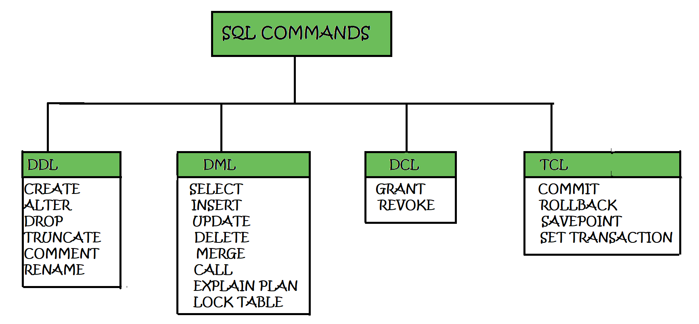

SQL Commands
SQL works through set of Commands , these are grouped based on what actions they do.
Below is a cheat sheet for commands we mostly use. They can be classifed into FOUR types.
DDL
DML
DCL
TCL
DDL (Data Definition Language) Commands
DDL is short name of Data Definition Language, which deals with database schemas and descriptions, of how the data should reside in the database.
CREATE – to create database and its objects like (table, index, views, store procedure, function and triggers).
ALTER – alters the structure of the existing database.
DROP – delete objects from the database.
TRUNCATE – remove all records from a table; also, all spaces allocated for the records are removed.
COMMENT – add comments to the data dictionary.
RENAME – rename an object.
DML (Data Manipulation Language) Commands
DML is short name of Data Manipulation Language which deals with data manipulation, and includes most common SQL statements such SELECT, INSERT, UPDATE, DELETE etc, and it is used to store, modify, retrieve, delete and update data in database.
SELECT – retrieve data from one or more tables.
INSERT – insert data into a table.
UPDATE – updates existing data within a table.
DELETE – delete all records from a table.
MERGE – UPSERT operation (insert or update)
CALL – call a PL/SQL or Java subprogram.
EXPLAIN PLAN – interpretation of the data access path.
LOCK TABLE – concurrency control.
DCL (Data Control Language) Commands
DCL is short name of Data Control Language which includes commands such as GRANT, and mostly concerned with rights, permissions and other controls of the database system.
GRANT – allow users access privileges to database.
REVOKE – withdraw users access privileges given by using the GRANT command.
TCL (Transaction Control Language) Commands
TCL is short name of Transaction Control Language which deals with transaction within a database.
COMMIT – commits a transaction.
ROLLBACK – rollback a transaction in case of any error occurs.
SAVEPOINT – a point inside a transaction that allows rollback state to what it was at the time of the savepoint.
SET TRANSACTION – specify characteristics for the transaction.